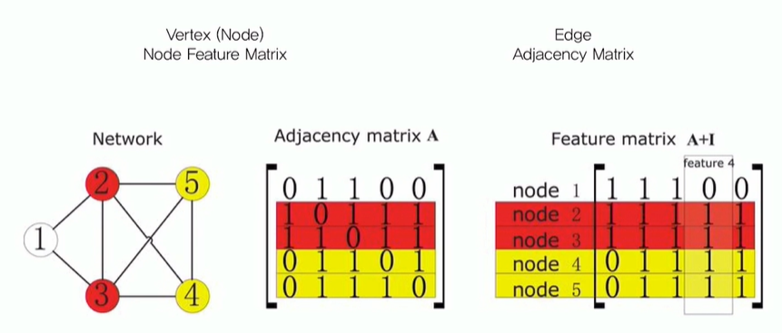

Graph Convolutioal Network (GCN)
What is Graph?
Data Representation - Graph

Graph Structure

- Vertex set과 Edge set을 Graph라고 정의한다.
- Weighted Grapgh vs. Unweighted Graph
- Directed Graph vs. Undirected Graph

- \(n\) 개의 노드가 있다면 Adjacency matrix는 \(n\times n\) 크기를 갖게 된다.
- 5개의 노드가 있으므로 \(5\times 5\) Adjacency matrix
- \(\bf{A}_{ij}\) : Adjacency matrix의 i번째 row와 j번째 컬럼에 있는 값을 나타내며, i번째 노드와 j번째 노드가 서로 연결이 되어 있는지를 나타낸다.
- 노드 사이에 엣지가 있는지? (있으면 \(1\), 없으면 \(0\))
- Feature matirx로 각 노드의 정보를 나타낸다.
- Feature matrix의 크기는 \(n(\text{노드의 수}) \times f(\text{feature 개수})\) 이며, \(f\)는 설정함에 따라서 많아질 수도 있고 적어질 수도 있는 값이다.
- feature matrix를 \(\bf{X}\) 라고 부른다면, \(\bf{X}_{ij}\) 가 의미하는 것은 i번째 노드에 j번째 feature가 무엇인지 나타내는 것이다.
Convolutional Layer
Preserve the spatial structure
Weight sharing
- Reduce the number of parameters \(\to\) less overfitting, low computational cost
- Learn local features
- Translation invariance
What should we update?
이미지가 아닌 그래프에 적용시키려면 구조를 어떻게 바꿔야할지 생각해보자.
CNN updates values in activation map in each layer. Values of activation map determine the state of image.
Values of each node feature determine the state of graph. \(\to\) Make each layer of network update values of each node feature
결국 중요한 것은 Graph Convolutional Layer를 거치게 되면 노드 피처에 담긴 값이 업데이트가 되어야 되겠다.
그렇다면 어떤 방식으로 업데이트를 해야 타당할까?
어쨌든 이것도 컨볼루션인데.. 컨볼루션은 어떤 웨이트를 쭉 이동시키는 연산이었는데 중요한 특성은 Weight sharing을 한다는 것이었고, 로컬한 피처를 배운다는 것이 또 하나의 특징이었다.